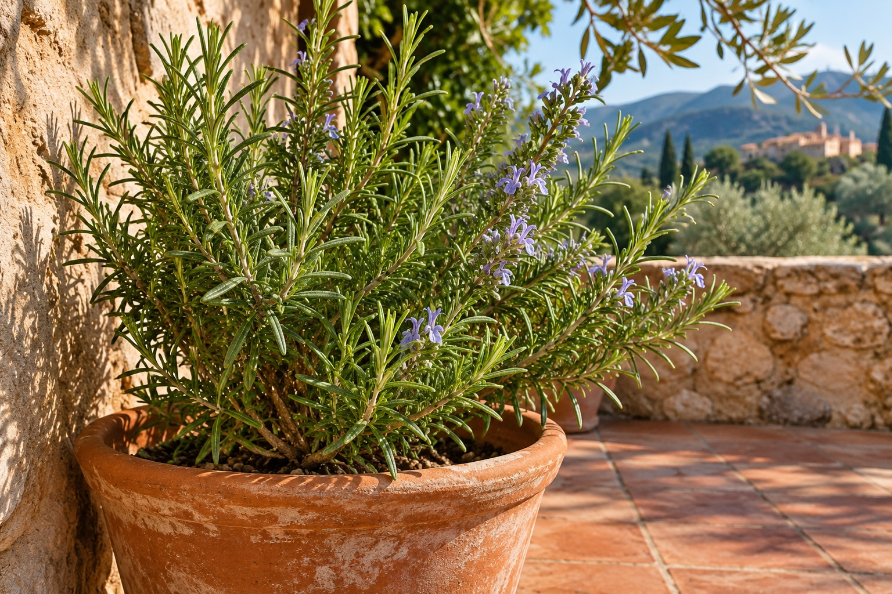

Cómo cuidar el romero en maceta
Una planta aromática puede convertir un rincón cotidiano en una invitación a observar la naturaleza.
Revisado el

El romero es una planta aromática conocida por sus hojas fragantes y su presencia en la cocina mediterránea. Su nombre científico aceptado es Salvia rosmarinus. La identificación de una planta no debe basarse únicamente en una imagen o en la respuesta de un asistente.
Un paseo por su entorno
Desliza para recorrer estas recreaciones visuales con IA. Son ilustraciones, no imágenes para identificar especies.


Una planta, dos nombres
Es posible que encuentres el nombre Rosmarinus officinalis en etiquetas y libros. Kew lo recoge como sinónimo de Salvia rosmarinus; ambos nombres pueden aparecer en fuentes de jardinería.
Antes de empezar
Observa cuánta luz recibe el lugar y escoge una maceta con orificios de drenaje. La Royal Horticultural Society recomienda para esta planta un recipiente de al menos 30 cm de ancho y profundidad. El romero suele preferir mucha luz y un sustrato que no permanezca encharcado; ajusta los cuidados al clima y a las condiciones de tu espacio.
¿Cuándo necesita agua?
En maceta necesita atención durante periodos secos. Comprueba el sustrato y adapta el riego a su estado y al clima; evita que las raíces permanezcan en agua.
Aprende observando
Comprueba el sustrato antes de regar y observa cómo responde la planta a lo largo de las estaciones. Evita seguir un calendario rígido sin tener en cuenta el tamaño de la maceta, la temperatura y la humedad.
De la planta a la cocina
Si deseas cocinar, utiliza romero comercial identificado y apto para consumo. Esta ficha no recomienda preparados medicinales. Puedes comenzar con pequeñas cantidades como ingrediente culinario, siguiendo una receta y tus necesidades alimentarias.